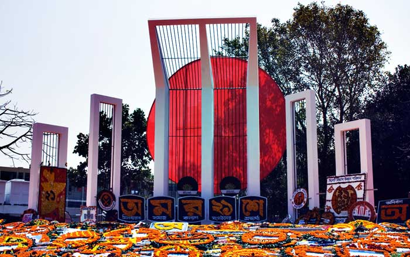
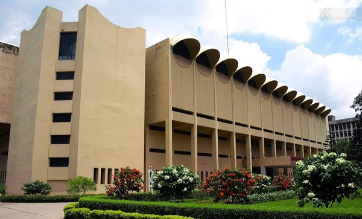

A WHOLEHEARTED WELCOME IN BANGLADESH
Cox's Bazar Sea-beach

Cox's Bazar Sea-beach
Cox's Bazar is consists of miles of golden sands, towering cliffs, surfing waves, rare conch shells, colourful pagodas, Buddhist temples and tribes. The most attractive tourist Resort full of bounties of nature in Bangladesh. Having the world's longest unbroken 120 k.m beach slopping gently down to the blue waters of the Bay of Bengal against the picturesque background of a chain of hills covered with deep green forests, Cox's Bazar is one of the most attractive tourist spots in the world. Cox’s Bazar sea beach Attractions of the long sea-beach include the silvery waves of the sea breaking at the foot of hills at the hight tides, sea bathing, a trip along the beach by jeep, the view of the setting sun in the rolling sea-waves, the moonlit night, the exciting interior of the Bazar and its people. The romantic call of the daring sampans (boat), the waterfall, the forest, the artful Pagodas-all takes a tourist into surprise. Located at a distance of 152 km south of Chittagong one can reach this green hilly and flowery dreamland by Air, road and sea from Chittagong, and by air from Dhaka. The town is named after Lieutenant Cox, who died here in 1798 after he had established a colony of Mags, who sought shelter in British territory after the conquest of Arakan by the Burmese
National days of Bangladesh
Bangladesh has a golden history. We have 21st February (International Mother Language Day), 26th March (Independence Day), 16th December (Victory day), Pahela Baishakh (First day of Bengali New year). These days are generally observed as public/national holidays of Bangladesh21st February – International Mother Language day
Shaheed Minar Symbol of Language Day
Bangladesh is the only nation in the world who sacrifices blood for the sake of Mother’s tongue. It was 21st February in 1952; Bangladeshi people start the movement against the government of Pakistan for the Bengali Language. In that action, Salem, Rafique, Barkat, Shafiul, and many others sacrifice their lives. At last Pakistan, the government is forced to declare Bengali, as a state language of Bangladesh.
After that day, to commemorate the sacrifice of our national heroes in this day is observed. In the year of 1999, United Nations General Assembly provides recognition of the day and UNESCO first declared this day as “International Mother Language Day.”
Major Rivers Of Bangladesh

The Brahmaputra River, one of the most important in Asia, flows through Bangladesh.
Bangladesh is renowned for its beautiful geomorphic features, including the massive rivers flowing throughout the country. Within the borders of Bangladesh lie the bottom reaches of the Himalayan Ranges' water sources, which serve as the primary sources for rivers that flow through such countries as China, Bhutan, and India and eventually passing into the Bay of Bengal in Bangladesh. The Bangladesh Rivers also drive various economic activities such as agriculture, waterway communication, and energy source among others. Since these rivers play a significant role in the economic growth, it is therefore deemed important to study some of the major rivers in Bangladesh, focusing on the countries they flow through. The following are some of the major rivers in Bangladesh.
Brahmaputra River
The Brahmaputra River is one of the greatest in Asia and the longest to pass through Bangladesh, covering a length of 1,802 miles, and also cutting across India, Bhutan, and China. It starts from Kailash in northern Tibet and ends in the Bay of Bengal. The Assam people see this river as both a blessing and a curse citing the floods it causes on the adjacent land during the monsoon but leaves an immensely fertile ground after the floods. Peasants take advantage of this land not only to plant food for their use but also for export purposes. Despite its significance to the Assamese, the river is also prone to surface water pollution that arises from oil spillages from vehicles and nearby factories.
Ganges River
The River Ganges originates from the Himalaya Mountains and it is accompanied by three distinct courses of flow, namely its upper, middle, and lower courses. Famous for its large water basin, it stretches over a distance of 1,569 miles cutting through India and Bangladesh. Over the years, the surrounding area has always been liable to floods causing numerous effects to the inhabitants living nearby. Despite all these effects that are detrimental to the residents, the floods also bring some benefits of land fertility.
Bangladesh National Museum
Bangladesh National Museum located at Shahbagh area in Dhaka, has very noticeable architectural design in its four-storied building. The area of this building is 20 thousand square meters, which has more than 83 thousand patterns in 46 galleries. It is the largest museum not only in Bangladesh but also in South Asian countries. The first floor of the museum is seemed to be a small version of the whole of Bangladesh. A giant map of Bangladesh is placed on the 1st floor. You will see also see a miniature version of trees, animals, Sundarbans, the lifestyle of the tribes, minerals, coins and various sculptures of the ancient period of Bangladesh.